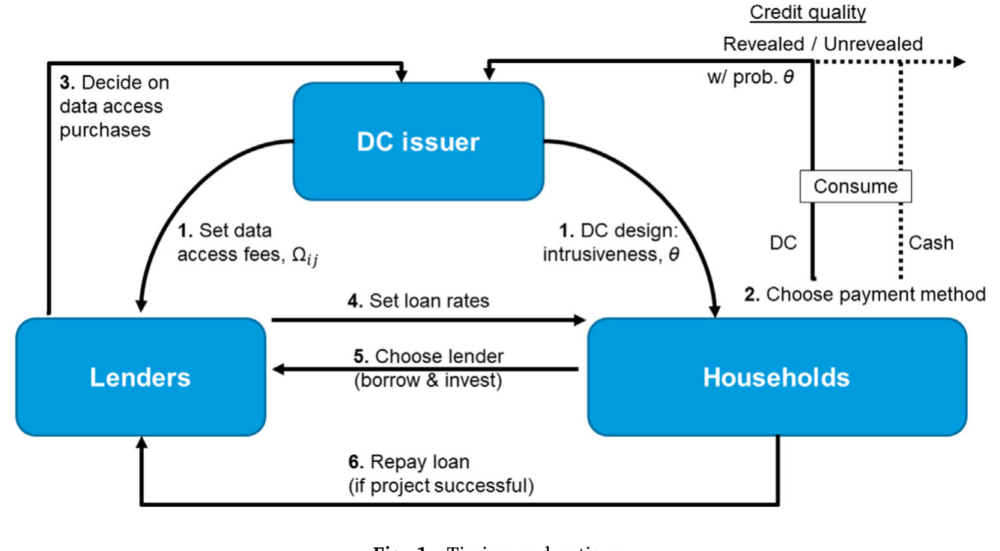
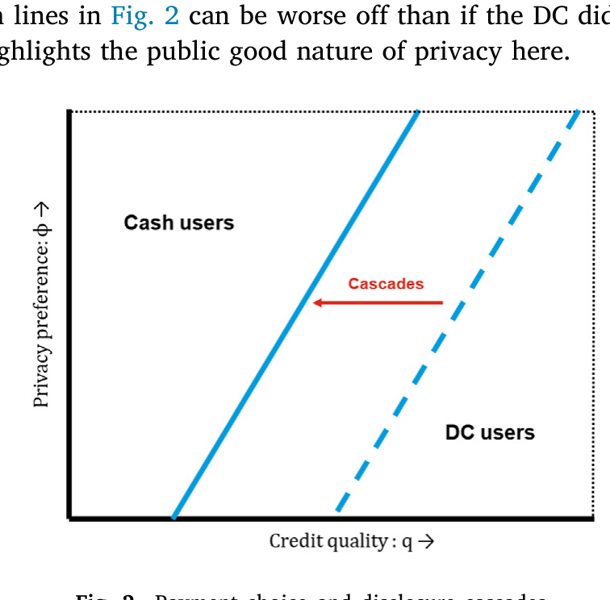
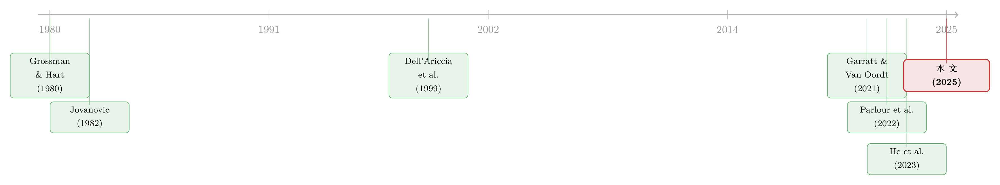

把你的消费记录卖给银行：一个数字支付垄断者的「上游」生意
本文读的是 Agur, Ari & Dell'Ariccia (2025, Journal of Financial Economics)：当一个掌握支付数据的科技垄断者站在信贷市场的「上游」，它会把数字支付的「侵入性」调到最满，靠制造一场「披露级联」把本不愿暴露的人也卷进来，再把数据卖给互相竞争的银行——这门生意比自己下场放贷更赚钱。而放任自流的市场，侵入性总是高于社会最优，这就是监管的理由。
1 引言：扫码的那一刻，谁在记账？
你掏出手机，扫码，付款。整个过程不到两秒，便利得让人忘记另一面——这一笔消费被记录了下来：在哪家店、买了什么、花了多少。把成千上万笔这样的记录拼起来，再喂给一套算法，就能反推出一件你未必愿意让别人知道的事：你这个人，借钱靠不靠谱。
这就引出了一个很现实的两难。一方面，把消费数据交出去，能减少借贷市场里的信息不对称，让放贷人更准地给你定价——信用好的人因此能拿到更便宜的贷款。另一方面，谁愿意让自己的一举一动都被「扒」得一清二楚？这是要付出隐私代价的。于是每个家庭都面临一道选择题：是捂紧自己的隐私，还是用隐私去换更好的信贷条件？
但本文真正想问的，不是家庭怎么选，而是上面那只手——那个发行数字支付工具、并能决定「记账记到多细」的科技巨头——会怎么设计这套游戏。新支付技术让收集消费数据变得越来越容易，而网络外部性 (network externalities) 又限制了支付服务商的数量，让少数几家手握巨大的「数据采集市场势力」(market power in data collection)。当这样一个 大科技公司 (BigTech) 出现时，市场会如何在「信贷供给」和「隐私」之间权衡？谁是赢家，谁是输家？要不要政府出手？
Agur, Ari & Dell'Ariccia 用一个干净的理论模型回答了这三个问题。这篇文章我们就顺着它的逻辑，一步步看清楚：一个站在信贷上游的数据垄断者，到底是怎么把居民和银行玩弄于股掌之间的。
2 三类玩家与一个核心张力
先把舞台搭起来。模型里有三类风险中性的玩家，分布在 N > 3 个相互连通的「岛」上，每个岛住着质量为 1、连续分布的一群家庭，还有一个本地放贷人：
- 家庭 (households)：本文管他们叫「消费者-企业家」。每个家庭手里有一个项目，成功了能拿到收益
y，失败则为0，但项目必须靠外部融资才能启动。每个家庭由三个变量刻画——信用质量q、隐私偏好φ、以及它所在的岛。岛是公开可见的；q和φ则是私人信息。模型设q ∈ [1/2, 1]、φ ∈ [0, 2]，二者在一个二维平面上均匀分布且相互独立。 - 数字货币发行商 (DC issuer)：一个垄断者，为了把直觉钉死，作者把它具体化为「数字货币 (digital currency, DC) 的发行方」，商业模式类似 Meta——靠收集和出售数据赚钱。
- 放贷人 (lenders)：第三类玩家，用「lender」而非「bank」是因为模型设定足够一般，也能涵盖非银放贷者。
核心张力藏在家庭的支付选择里。现金 (cash) 完全保护隐私；而如果用 DC，那么以某个概率 θ，发行商就能推断出这个家庭的信用质量。这个 θ 不是天上掉下来的——它正是发行商手里的选择变量，作者称之为「侵入性」(intrusiveness)。θ 越大，发行商越可能识破你的类型，你的隐私损失也越大。

Figure 1: Timing and actions
把这一切写进家庭的期望收益里，就是模型里那个最关键的取舍。如果用现金，家庭面对的是市场上「混合定价」的统一利率 R_u；如果用 DC，则以概率 θ 被识破、面对针对你信用质量定制的利率 R_k(q)，以概率 1−θ 没被识破、仍走统一利率 R_u，但无论如何要扣掉一笔隐私损失：
而用现金的家庭，收益就是干净的 q·max{y − R_u, 0}：没有定制利率的好处，也没有隐私的损失。整篇论文的戏剧性，全部从这一个取舍里长出来。
3 第一个反转：为什么发行商会把侵入性「拉满」？
直觉上，你可能觉得：发行商应该克制一点，毕竟把侵入性调得太高，会吓跑那些在意隐私的用户，DC 的市场份额不就缩水了吗？
恰恰相反。模型的第一个结果是：发行商会把支付工具做得「能多侵入就多侵入」，一直调到让所有用户的信用类型都被确定地识破（θ = 1）。
这背后的机制，作者叫它「部分瓦解的柠檬市场」(partially unraveling Market for Lemons)，更形象的说法是「披露级联」(disclosure cascade)。我们慢慢拆。
首先，家庭会自我分选：隐私成本低、信用质量高的人，本来就想用 DC——反正不太在意被看见，被识破了还能拿到更便宜的定制利率，何乐而不为；隐私成本高、信用质量差的人，则铁了心用现金。这两头都好理解。
接着，一个自然的问题是：夹在中间的那群人怎么办？ 他们本来摇摆——如果大家都用现金，他们也乐意用现金。但问题在于，当那些「高质量、低隐私成本」的人率先离开现金、转投 DC 之后，留在现金池子里的人，平均信用质量就变差了。放贷人看到这个变差的池子，只能调高对现金用户的统一利率 R_u。于是现金突然变贵了，那些中间人被「卷」着也离开现金——而他们一离开，现金池的平均质量进一步恶化，利率再升……
这就是级联：一层推一层。结果是，提高侵入性 θ，DC 的市场份额反而随之上升——尽管每个用户单独承受的隐私成本更高了。发行商利用的正是这股「披露外部性」(disclosure externality)：一个高质量用户离开现金，伤害的是所有还在用现金的人。

Figure 2: Payment choice and disclosure cascades
把这一步想透，你就明白发行商为什么毫不手软地把侵入性调满了：它不是在「服务」用户，而是在用一群人的离场，去逼另一群人就范。
4 第二步：把数据「免费」送给隔壁岛的银行
发行商把数据攒到手，下一个问题是怎么把它卖出最高价。这里出现了第二个反直觉的结果：发行商通过给「本岛之外」的银行免费提供数据，来最大化卖数据的收入。
为什么免费反而能多赚钱？关键在银行之间的竞争结构。银行在信贷市场上按 Bertrand 方式竞争，而它们有两重差异：一是能不能拿到借款人的信用数据，二是监督成本。监督本岛借款人，home lender 花 c_m^h；跨岛去监督「外岛」借款人，要多花一笔 τ（即 c_m^a = c_m^h + τ，τ > 0 衡量了本地放贷人的监督成本优势）。把放款与监督成本合并记作 c = c_f + c_m^h，那么外岛放贷人的总成本就是 c + τ。
在对称信息下会出现一个「极限定价」(limit-pricing) 均衡：每家银行牢牢守住自己本岛的借款人、榨取本岛的剩余，同时去隔壁岛「骚扰」一下却赢不下来。于是，最怕被「切断」信息的，恰恰是 home bank——一旦它的对手免费拿到了本岛借款人的信用信息，它本岛的「自留地」就保不住了。正因为如此，home bank 愿意为「不被甩开」付出最高的价格。发行商把外岛数据设成免费、制造出「对手随时可能拿到信息」的不对称威胁，反而把 home bank 的支付意愿顶到了最高。
这是典型的「用竞争当杠杆」：发行商自己不压价，而是借银行之间的相互威胁，把每一份数据的价格抬到极致。免费，是一种精算过的策略。
5 真正关键的一步：垄断者为什么甘愿只当「卖数据的」？
到这里，一个更尖锐的问题浮上来了：发行商既然手握全套支付数据，它为什么不干脆自己下场放贷，把信息攥在自己手里、独吞信贷市场的全部利润？ 毕竟，数据与信贷的整合，本身就有「范围经济」(economies of scope) 的诱惑。
这是全文最精彩的一步。模型的第三个结果是：发行商宁可把信息卖给银行，也不愿自己放贷。 而原因，藏在「现金」这个看似古老的东西里。
逻辑是这样的：现金的存在，让发行商的垄断变得「部分可竞争」(contestable)。设想发行商真的下场当放贷人——它会用独家的支付信息在贷款市场上建立垄断，把借款人的剩余榨干。但居民不傻，他们预见到了这一点。 既然用 DC 的下场是被这个垄断放贷人一分不剩地榨光，那大家干脆全都改用现金——这样一来，发行商相对于其它放贷人的信息优势就荡然无存了。
于是反转出现：银行之间的竞争，反而成了发行商的「承诺装置」(commitment device)。 因为只有当数据卖给互相竞争的银行、借款人还能从竞争里分到一杯羹时，居民才愿意继续使用 DC、继续把数据交出来。发行商若有办法可信地承诺「我自己放贷也只收低利率」，本可以兼得；但在缺乏完美承诺工具的现实里，把数据卖出去、让银行去竞争，就是它能找到的最好的「自我约束」。 这一点也为「数据采集与信贷供给是否应当整合」这个政策争论，提供了一个反向的制衡力量。
这其实呼应了印度在 2016 年推出统一支付接口 (UPI) 之前的现实：彼时占主导的数字支付垄断者 Paytm 并不直接放贷，而是把自己的数据当作连接借款人与放贷人之间的「收费桥梁」。模型抓住的，正是这种「上游数据中介」的处境。
这里的洞见值得反复咀嚼：垄断者自愿放弃了一部分剩余，不是出于善意，而是因为不放弃就什么都拿不到。现金作为一个「匿名退出选项」的存在，悄悄给数据垄断套上了一根缰绳。
6 模型的正式骨架
把上面的故事翻译成形式化的模型，核心是三个方程。我们一步步看。
家庭的支付选择，前面已经给过（方程 3）：在现金的「无隐私损失但统一利率」和 DC 的「定制利率诱惑减去隐私损失」之间做比较。这是需求端。
发行商的目标，是通过选择侵入性 θ 和对每家银行的数据访问费 Ω_ij，最大化卖数据的总收入：
$$\max_{\theta\in[0,1],\,\Omega_{ij}} \;\; \sum_{i\in[1,N]}\sum_{j\in[1,N]} \Omega_{ij}\, D_{ij}\big(\theta,\Omega_{ij}\big) \tag{1}$$
这里 Ω_ij 是发行商向银行 i 收取的、获取岛 j 上家庭数据的访问费；D_ij(θ, Ω_ij) 是银行 i 对岛 j 数据的需求函数，取值 0（不买）或 1（买），取决于定价 Ω_ij 与银行从数据中获得的价值。注意：发行商只出售信用质量数据，而不出售「谁开了 DC 账户」的名单——否则会把未被识破的家庭进一步分裂成「现金用户」和「未被识破的 DC 用户」两个池子，给模型引入投机模仿，反而把分析搞复杂。
放贷人的利润，则可以写成一般形式（方程 2）：
$$\big(E[q_{ik}R_{ik}(q_{ik})]-c\big)(m_{ih}+m_{ia})-m_{ia}\,\tau+\big(E[q\mid u]R_{iu}-c\big)(\upsilon_{ih}+\upsilon_{ia})-\upsilon_{ia}\,\tau-\sum_{j\in[1,N]}\Omega_{ij}\,D_{ij}\big(\theta,\Omega_{ij}\big) \tag{2}$$
这条式子有三块：
- 第一块是对「被识破」借款人的期望利润。
m_ih、m_ia分别是从银行i借款的、本岛与外岛被识破家庭的质量。对这些人，银行能用定制利率R_ik(q_ik)精准定价；本岛成本c，外岛要多扣τ（这正是−m_ia τ项的来源）。 - 第二块是对「未被识破」借款人的期望利润。
υ_ih、υ_ia是相应的本岛、外岛未被识破家庭的质量，他们只能拿到混合利率R_iu，银行的条件期望质量是E[q | u]。 - 第三块是银行若选择向发行商买数据所付的费用，正是方程 (1) 里那一项。
把三方放在一起，均衡就内生地决定了侵入性 θ、市场份额、数据价格 Ω_ij，以及谁是赢家谁是输家。在这个「足够多借款人有正 NPV 项目、以至于均衡中每个项目都能被融资」的经济里，引入 DC 的总产出不变、却凭空多出了隐私成本——所以一个社会规划者，在这种情形下永远更偏好一种「无信息」的支付方式。
7 福利与监管：一把「慢刀」，外加一道税
既然放任自流的均衡里侵入性高于社会最优，监管的理由就出来了——这是本文的第四个核心结果。
作者把监管设想成一种「慢变量」政策：它在经济状态实现之前就被定好，并以「对垄断者数据采集侵入性的约束」这一形式落地。最优监管要做的，是权衡两件事：当信贷供给本来就有保障时，侵入性带来的纯粹是隐私成本；但在「信贷紧缩」(credit crunch)、即关于个体借款人的信息缺失会导致市场冻结的状态下，更强的信息披露反而让信用好的人有办法「脱颖而出」、拿到贷款，从而提高总信贷与总福利。监管就是在这两种状态之间做取舍。
更妙的是第二件工具：对选择使用 DC 的家庭征税或补贴。为什么两个工具能比一个工具做得更好？因为被披露的家庭数据有两个边际：一个是「外延边际」(extensive margin)——多少比例的家庭选择了披露；另一个是「内涵边际」(intensive margin)——对这些家庭披露得有多深。光靠约束 θ 只能管住后者，要同时调节前者，就需要一道直接作用在「谁选 DC」上的税收/补贴。
文章还在若干扩展里夯实了主结论：若数字支付系统由一个银行财团而非单一垄断者持有，福利落在垄断者与社会规划者之间——财团既不主动利用、也不刻意对抗披露外部性；此外，结论并不依赖「支付是信用质量数据的唯一来源」这一假设，关键只在于新支付方式比旧方式揭示了更多信用信息。
8 文献脉络
把这篇论文放回它所在的学术谱系，能更清楚地看到它的位置。
最上游，是关于最优信息披露的经典工作——Grossman & Hart (1980) 与 Jovanovic (1982)：在什么条件下，拥有信息的一方会自愿（或被迫）把信息「晒」出来。本文里那场「披露级联」，本质上就是这条古老 unraveling 逻辑在支付数据语境下的当代变体。
往下，是银行竞争与信息不对称这条线。Sharpe (1990)、Petersen & Rajan (1995) 讲关系型借贷里的信息租金；Dell'Ariccia, Friedman & Marquez (1999) 把逆向选择看作银行业的进入壁垒；Agarwal & Hauswald (2010) 和 Heitz et al. (2023) 则用物理距离刻画私人信息与监督成本——本文里 home / away lender 的 τ 设定正是承接于此。

再往下，是这几年最热闹的金融科技、支付与隐私这条新线。Garratt & Van Oordt (2021) 把隐私视作一种公共品，论证电子现金的社会价值；Ahnert, Hoffmann & Monnet (2022) 直接研究数字经济中支付与隐私的张力（关于这篇，可参见《隐私不是免费的护身符：当「匿名」变成借款人从贷款人兜里掏走的租金》）。与本文最接近的是 Parlour, Rajan & Zhu (2022) 和 He, Huang & Zhou (2023)：前者让支付服务商与银行竞争、外部性来自「数据与信贷的耦合」，后者讨论开放银行里「数据归借款人所有」反而次优。
而本文与这些 FinTech 模型的关键区别在于：它刻画的不是一家与银行平起平坐竞争的金融科技公司，而是一个站在上游、控制信息流的数据垄断者——一个 BigTech。它能决定数据采集的侵入性，又要与现金竞争，因此得以「左右互搏」地玩弄居民与银行。这一点，也让本文与「数据卖一次就稀释一次」的视角（Liu, Ma & Veldkamp, 2025；可参见《数据卖一次，就稀释一次》）、以及无现金支付如何扩张普惠信贷的实证（可参见《一辆共享单车，如何让 1 亿人「被看见」？》）形成了有趣的互文。
9 评论与延伸（Q&A + 研究方向）
(a) 几个可能的疑问
Q：这里的「披露级联」和经典的柠檬市场 unraveling 是一回事吗？
不完全是。经典 unraveling 会一路瓦解到「人人披露」；本文的级联是部分的——它被现金这个「匿名退出选项」截停。高隐私成本、低质量的人始终守在现金里，所以池子永远不会被彻底掏空。发行商利用的恰恰是这个「半瓦解」状态：既制造了足够的离场压力，又保留了一个值得榨取的现金池。
Q：发行商把侵入性调到 θ = 1，难道不会把在意隐私的用户全吓跑、反而缩小市场吗？
关键在于市场份额是内生的。提高
θ确实抬高了单个用户的隐私成本，但它同时通过恶化现金池、抬高现金利率，把中间人「推」向 DC。模型证明后一股力量占优，所以份额随侵入性上升。这正是反直觉之处。
Q：「免费送数据给外岛银行」会不会只是模型的一个角点解，现实里站不住？
它确实是极限定价均衡的产物，但经济直觉是稳健的：当竞争靠「谁掌握信息」展开时，最怕信息被对手拿到的一方（home bank）支付意愿最高，而制造这种不对称威胁的最优手段就是把信息向其对手「放水」。这是一种用竞争结构而非定价来榨取剩余的逻辑，不依赖于精确的函数形式。
Q：结论是不是高度依赖「支付是唯一的信用信息来源」？
不依赖。作者在扩展里专门说明：核心假设只是「新支付方式比旧方式揭示了更多信用信息」，而非它是唯一来源。这让结论对现实中信用局、电商数据等并行信息渠道更具鲁棒性。
Q：为什么社会规划者「总是」偏好无信息支付？这听起来太强了。
注意这个结论有前提：它成立于「足够多项目是正 NPV、均衡里每个项目都能被融资」的基准经济。此时信息不创造任何新的产出，只带来隐私成本，所以无信息更优。论文随后专门构造了「信息缺失会导致市场冻结」的状态，正是在那里，信息才重新具有社会价值——结论并不是无条件的。
Q：银行财团持有支付系统，为什么福利落在垄断者与规划者「之间」？
因为财团内部既没有单一垄断者那种「主动利用披露外部性去榨取」的激励，也没有社会规划者那种「主动对抗外部性」的目标。它对外部性是中性的，所以福利结果自然居中。这其实给「谁该拥有支付基础设施」提供了一个有意思的比较静态。
(b) 几个可能的研究问题与提案
1. 把「上游数据垄断」搬到公司债 / 信用市场
【经济故事】本文的舞台是零售信贷。但在公司债市场，类似的「上游信息中介」也存在——评级机构、数据商、甚至托管行都可能把发行人或持有人信息「卖」给做市商。一个掌握订单流数据的平台，是否也会像本文的发行商那样，宁可卖数据给互相竞争的交易商，也不自己下场做市？ 【可行性】中。理论建模可直接改写本文框架；实证上需要交易商层面的数据访问与报价数据（如 TRACE 配合交易商身份），识别「谁拿到信息」与「报价不对称」之间的因果，难度偏高但并非不可行。
2. 外资持有人作为「隐私偏好异质」的天然实验
【经济故事】本文假设隐私偏好
φ高度异质却不可观测。跨境投资者对「被本国监管/数据系统看见」的敏感度，恰恰可能提供φ的一个可观测代理——外资往往更在意匿名性。当一国推动支付数字化、压缩匿名空间时，外资持有人的撤离是否构成一种现实版的「现金退出」？ 【可行性】中。需要细到投资者国籍的持有数据（如各国央行的证券持有统计），并找到数字支付/数据政策的离散变动作为冲击；识别可走 DiD，但要小心外资撤离同时受其它因素驱动。
3. 现金消亡如何收紧数据垄断的「缰绳」
【经济故事】本文的核心制衡来自现金这个匿名退出选项。那么，现金使用率在过去二十年的持续下降，是否意味着数据垄断者的承诺约束正在松动、侵入性均衡正在抬升？这是一个可直接检验的比较静态。 【可行性】高（描述性）至 中（因果）。各国现金使用率、数字支付渗透率有现成跨国面板；把「现金份额」与「数据采集侵入性 / 隐私投诉 / 信贷定制化程度」关联起来做描述性证据相对容易，要推到因果则需更强的识别。
4. 流动性视角下的「数据外部性」
【经济故事】本文的披露外部性发生在信贷定价上：一个人离场，抬高了别人的利率。能否把同样的外部性逻辑搬到二级市场流动性——当一部分持有人的信息被披露、定价更准，留在「匿名池」里的资产是否因逆向选择而更难成交、买卖价差更宽？ 【可行性】中。理论上是本文外部性机制的自然延伸；实证可在公司债或股票市场里，利用某类持有人信息披露的政策变动，检验「未披露资产」的流动性变化。数据（TRACE、13F 等）可得，识别需要一个干净的披露冲击。
10 我的判断
这篇论文的贡献，在我看来不在于哪一个具体的均衡条件，而在于它重新摆放了数据垄断者的位置。过去的 FinTech 模型大多把数据持有者当成信贷市场里的一名竞争者；本文把它请到「上游」，让它既不与银行抢生意、也不与现金抢用户，而是同时操纵两边的信息不对称，从中榨取比自己放贷更高的租金。「现金作为承诺装置」「免费数据作为竞争杠杆」「披露级联作为份额引擎」这三个机制，单独看都不新，但被组装进同一个垄断者的最优策略里，逻辑相当漂亮，也很有现实穿透力——它几乎就是对中国 Alipay/WeChat、印度 UPI 之前的 Paytm 这些案例的一次理论提炼。
对识别（这里是理论的「识别」即机制稳健性）的担忧，我有两点。其一，「免费送数据给外岛银行」与「侵入性拉满」都是极限/角点结果，它们在多大程度上依赖 Bertrand + limit-pricing 的特定竞争假设，值得在更一般的竞争结构下做稳健性检验——若银行竞争更软，发行商是否仍偏好完全披露？其二，「社会规划者总偏好无信息支付」这一结论被基准经济的「全融资」假设撑着，一旦放松到信贷会因信息缺失而冻结的更一般环境，福利排序就会翻转——这恰恰是论文自己点出的边界，但也提醒我们：本文的「过度侵入」结论是有条件的，监管含义不能无脑外推。
后续我最想看到的，是把这套「上游数据垄断」的逻辑接到可观测的数据上。理论已经足够清晰，下一步的价值在于：当一国现金加速消亡、或一家 BigTech 把支付与社交数据打通的那一刻，信贷定价的定制化程度、隐私投诉、以及不同信用质量人群的信贷可得性，究竟朝哪个方向动？这既能检验「披露级联」是否真实存在，也能给「要不要监管、怎么监管」的争论提供经验弹药。
参考文献
- Acemoglu, D., Makhdoumi, A., Malekian, A., Ozdaglar, A. (2022). Too much data: Prices and inefficiencies in data markets. American Economic Journal: Microeconomics 14(4), 218–256.
- Agarwal, S., Hauswald, R. (2010). Distance and private information in lending. Review of Financial Studies 23(7), 2757–2788.
- Agur, I., Ari, A., Dell'Ariccia, G. (2022). Designing central bank digital currencies. Journal of Monetary Economics 125, 62–79.
- Agur, I., Ari, A., Dell'Ariccia, G. (2025). Bank competition and household privacy in a digital payment monopoly. Journal of Financial Economics 166, 104019.
- Ahnert, T., Hoffmann, P., Monnet, C. (2022). Payments and privacy in the digital economy. ECB Working Paper 2662.
- Dell'Ariccia, G., Friedman, E., Marquez, R. (1999). Adverse selection as a barrier to entry in the banking industry. RAND Journal of Economics 30(3), 515–534.
- Frost, J., Gambacorta, L., Huang, Y., Shin, H.S., Zbinden, P. (2020). BigTech and the changing structure of financial intermediation. Economic Policy 34(100), 761–799.
- Garratt, R.J., Van Oordt, M.R. (2021). Privacy as a public good: A case for electronic cash. Journal of Political Economy 129(7), 2157–2180.
- Garratt, R., Lee, M.J. (2021). Monetizing privacy. Federal Reserve Bank of New York Staff Report 958.
- Grossman, S.J., Hart, O.D. (1980). Disclosure laws and takeover bids. Journal of Finance 35(2), 323–334.
- He, Z., Huang, J., Zhou, J. (2023). Open banking: Credit market competition when borrowers own the data. Journal of Financial Economics 147(2), 449–474.
- Jovanovic, B. (1982). Truthful disclosure of information. Bell Journal of Economics 13(1), 36–44.
- Liu, E., Ma, S., Veldkamp, L. (2025). Data sales and data dilution. Journal of Finance, forthcoming.
- Parlour, C.A., Rajan, U., Zhu, H. (2022). When FinTech competes for payment flows. Review of Financial Studies 35(11), 4985–5024.
- Petersen, M.A., Rajan, R.G. (1995). The effect of credit market competition on lending relationships. Quarterly Journal of Economics 110(2), 407–443.
- Sharpe, S.A. (1990). Asymmetric information, bank lending, and implicit contracts: A stylized model of customer relationships. Journal of Finance 45(4), 1069–1087.